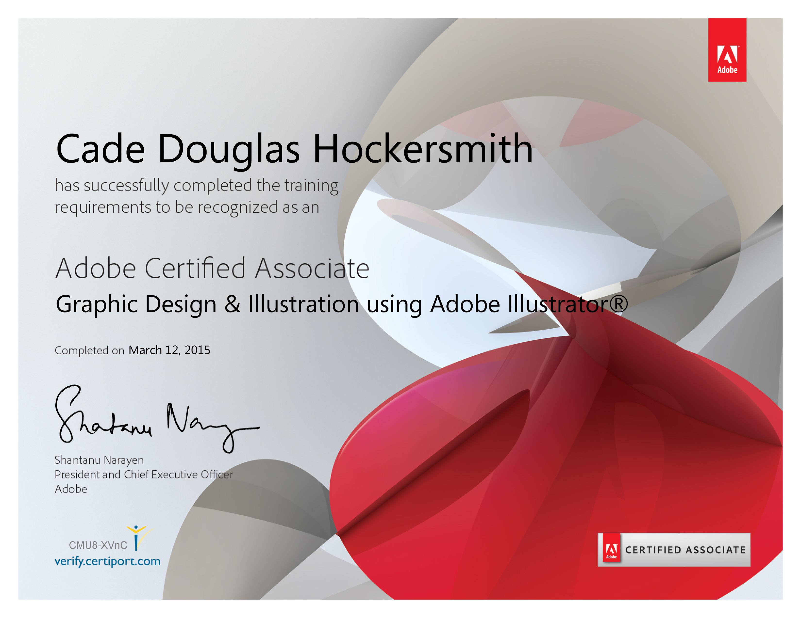
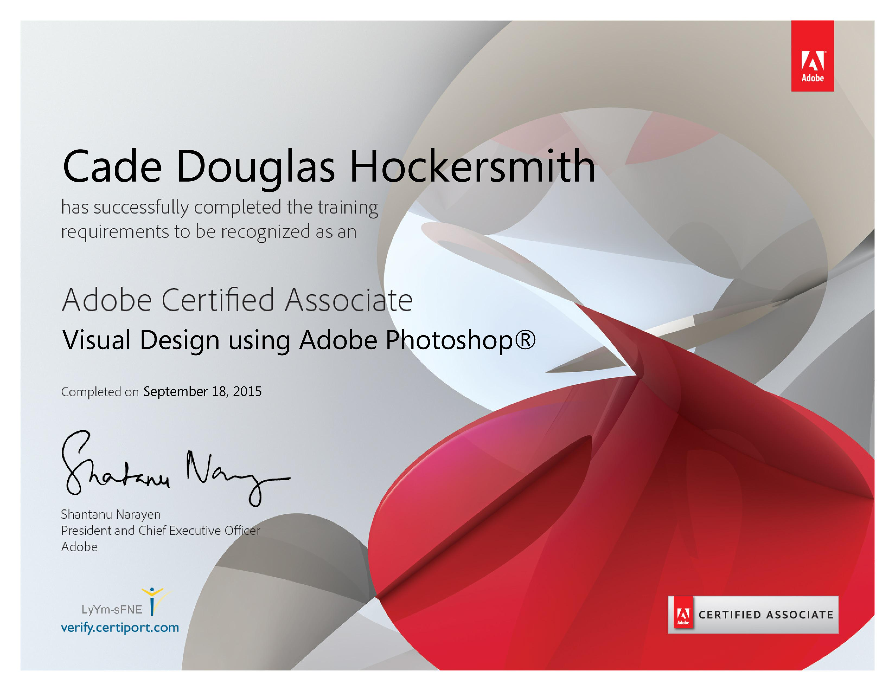
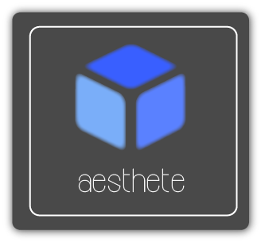
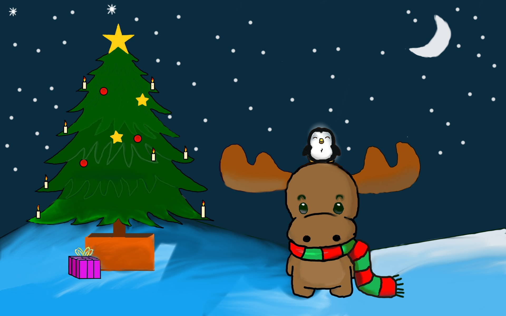

Previous Design Projects
Adobe Cerification


Project Explanation
This project introduced me to developing for mobile users. Compared to a desktop site, the mobile version must be a much more minimalistic user interface. The project required my group to create an app that would solve a problem faced by my peers. We choose to focus on streamlining the college selection process as it was widely recognized as an overwhelming process. This android based app would help students sort through the large list of potential colleges for them. We included several filters (GPA, location, degree) to assist students in finding the best college for their needs. This project focused on letting students explore an open ended topic.
Project Reflection
I learned more about how useful usability testing is to create an effective app. I worked closely with the lead designers and coders to create a friendly user experience. The core focus of the assignment was to make the app relevant to teenagers, so I frequently utilized usability testing to identify severe issues with the functionality of the app. User interface design is my favorite aspect of graphic design, so I enjoyed developing this skill. Overall, I was able to contribute to the effectiveness of the app by implementing user feedback.
Design Firm Logo

Project Explanation
This project introduced the concepts of branding while reviewing prior graphic design skills. Groups, acting as a Graphic Design Firm, would create a logo that represented the themes of their mission statement. Students were encouraged to constantly seek out feedback to strengthen their concepts. In addition, the rough drafts of the logos were presented to the class to promote constructive criticism. The groups then selected the most effective logo to create company letterheads, business cards, and envelopes.
Project Reflection
This project helped me learn how to effectively implement a minimalistic art style. Prior graphic design works were often cluttered, but a simple mission statement helped make my designs more impactful. I learned that carefully selecting the graphic elements creates a much stronger design. Despite my logo not being chosen, I was able to develop a previously unused graphic design skill. Overall, this unique project offered an engaging way to practice my ability to create a relevant logo that maintains the theme of a company.
Greek Legend Interactive
Project Explanation
Students were tasked with creating an easily understandable recreation of the journey of Greek hero Perseus. The deliverable was completely open to student interpretation which resulted in the experimental Twine interactive game. We chose this implementation as the class would be able to control the overall progression of the game. We wanted to ensure that our peers would continue to be interested throughout the duration of our project. Overall, this unique project encouraged students to experiment with an innovative deliverable to communicate the journey of a Greek hero.
Project Reflection
I learned the core concepts of HTML and CSS with the interactive Twine medium. This program can be easily changed with CSS code, so I was able to program layouts for the first time. I learned the basics of the CSS syntax which better prepared me for more complex assignments. This project was my first interaction with creating an effective User Interface which is my favorite part of designing for the web. Overall, I enjoyed that the Twine program supports major design changes without the complexity of raw CSS code.
Graphic Design Showcase


Project Explanation
This project required students to submit two pieces that represented their talents as an artist. I chose to submit a digitally created winterscape and a colorful photo to showcase the wide variety of skills I have obtained as an artist. These images were my favorite creations throughout my two years of graphic design.
Project Reflection
I learned how to effectively frame the subject of an image with my sunset picture. In addition, I learned how to manipulate the color balance in Photoshop to create a visually stunning image. For my graphic design element, I focused on capturing a cartoon look that maintained a consistently pleasant theme. Developing the tone of a work was completely new to me, so I am glad that I was able to effectively represent the intended purpose.
Return to Homepage